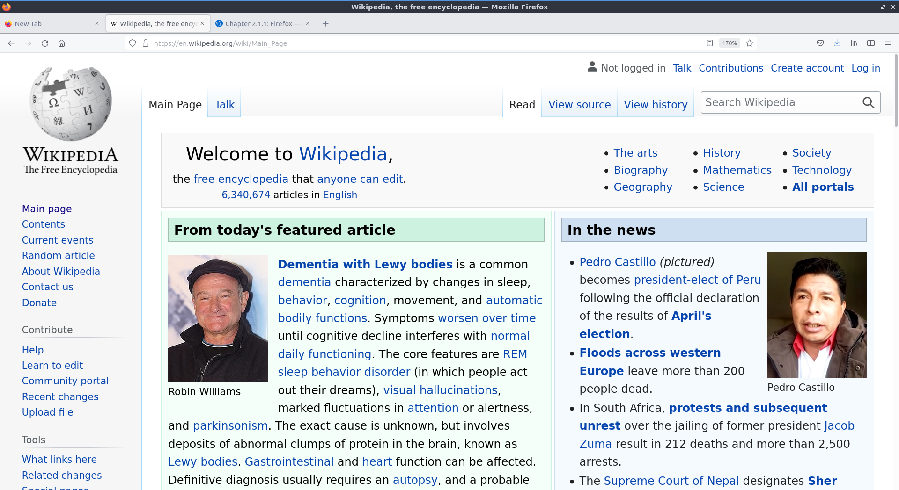
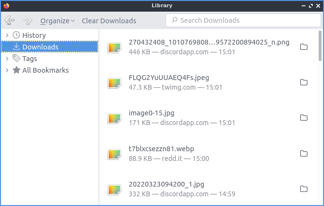
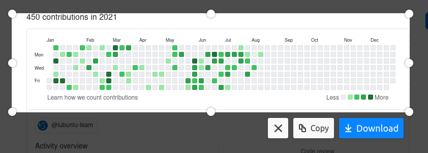
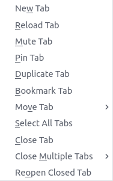
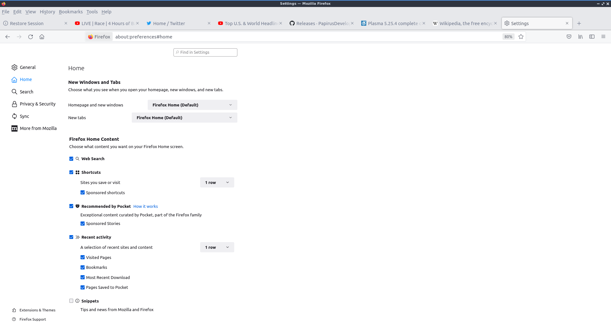

Chapter 2.1.1: Firefox¶
Description¶
Firefox is a highly-rated, and secure web browser that is installed by default in Ubuntu. It is a decent choice if one wants a secure, fast, yet relatively less resource-heavy browser.
- Firefox has features of other web browsers and its own ones, such as:
Tabbed browsing
Scroll through tabs
Great plugins and add-ons
Favorites, bookmarks, pocket
Firefox account sync
Master password
UI customization with themes and toolbars
Advanced customization with about:config
Open source
Screenshot¶
{kind=link}
Usage¶
To open a new tab in Firefox press the plus button on the right of the tab bar, right click the tab bar , or press Control + t. To close a tab press the button with an x on the right side of the tab or press Control +W. To Open a new window in browsing press Control +N. To view your browsing history press the hamburger menu or press Control +H. When you have the history sidebar you can search through your history where it says Search History. To change how to sort your history click the View label and select how you want to search your history. To view your downloaded files press the button that looks like three stacked books with a fourth leaning over .
To go back to a previous page in Firefox press the button pointing to the left or press Alt + Left arrow. To open the page you were previously browsing in a new tab middle click the back button. To go forward to a page you have visited before but have now gone back from press the button with the arrow pointing to the right or Alt + Right arrow. Middle click on the forward button to open the page you went back from in a new tab. To download a file directly to your local disk right click file as and then you will get a dialog box to show where to save it. To save an image to your computer right click the image and select .
To open a window with all of your downloads on it press Control+Shift+Y. To open PCManFM-Qt in the folder where you downloaded things right click and select on the download and select . To share a link with someone else for something you downloaded right click on the downloaded content right click and select .
To open a window with all of your downloads press Control+Shift+Y. To open PCManFM-Qt in the folder where you downloaded things right click and select on the download and select . To get a link for someone else to download something right click on the downloaded content right click and select . To open a downloaded file double click on it. To not have a download show in your history right click on it and select Remove from History. To clear all your download history right click and select or press the Clear Downloads button at the top.
To have a list of all of your tabs press the downward pointing arrowhead button however this only appears if you have more tabs than fit on your screen normally. To switch the view of your tabs if you have more than on the screen press the right ward pointed arrowhead to move the visible part of the tab bar to the right. To move the visible part of the tab bar to the left press the leftward pointed arrowhead. To move a tab to where you want it left click the tab and drag it to the position you want the tab.
To open a new tab press the + button. To search through all your tabs you can click on the downward pointed arrow and select . To scroll down using the keyboard press Page Down. To scroll up the page with the keyboard press Page Up. To scroll all the way back up to the top press the Home key. To move all the way to the bottom of the page press the End key.
To go to a specific URL in the address bar you can type it in the main bar in the middle. If you have a URL in your clipboard you can paste it here or into the address bar right click . Or if you right click into the clipboard and not immediately go to the page and type in a sub page right click and then type to go a specific sub page of the same site and then press Enter to go to the page. If you press F6 the cursor will select the address bar. If you want to search through the tabs you have open type % and then what you want to type in the address bar.
To bookmark a page press Control +D, right click on the tab and select , or Press the button with three horizontal lines and select or right click on the tab and select . To access the bookmark again press that looks like three vertical lines and a slanted one and . If you want a toolbar with your bookmarks on it right click on the address bar and select or the three horizontal lines button .
To manage your bookmarks press Control+Shift+O or three horizontal bars . To switch to different categories of bookmarks on the left hand side to switch categories. To search through your bookmarks type in Search Bookmarks box in the top right hand corner. To open a bookmark in this park double click on it or right click and select . To open a bookmark in a new tab right click on it and select . To delete a bookmark right click on it and select . To rename your bookmark something you will remember use the Name field. To change where a bookmark points to change the URL field. To add tags to your bookmark type them in the Tags field.
To copy text in Firefox select it with the mouse and press Control +C or right click on it and select . To paste text into Firefox press Control+ V or right click and select . To cut text in Firefox select the text and press Control+X or right click and select . To select all of the text on a page press Control+ A or right click and select .
To view info on your webpage press Control+ I. To take a screenshot of a webpage right click and select . Then select the part of the webpage you want by left clicking and dragging to select which part of the webpage to take a picture of. To save your screenshot press the Download button. To copy the screenshot to a clipboard press the Copy button. To cancel taking the screenshot press the Cancel button or press Escape. To take a screenshot of the whole webpage press the Save full page button. To save the visible portion of the page press the Save visible button.
To zoom in if you find the text on a web page to small press control + +. If you want to zoom out on the text or pictures press control + -. To reset to the original zoom press control + 0. To make Firefox fullscreen press F11 and to leave fullscreen simply press F11 again or in the hamburger menu press the two button with two diagonal arrows. While in fullscreen the tab bar will be hidden to change tab while you have Firefox in fullscreen move your mouse to the top of the monitor and the tab bar will popup. You can also type your zoom into Firefox from the hamburger menu field and press the + and -. To see the current zoom on a webpage read the zoom from the right hand side of the address bar.
To search for text in your tab press Control +F or use the three horizontal lines and select . A search bar at the bottom of the window will appear. To move to the next result click the downward arrow on the screen or click the upward arrow on the screen to move to the previous result. To toggle highlighting every match check/uncheck the Highlight All checkbox. To make the search not necessarily need to match capitalization uncheck the Match Case checkbox. To check if diacritical marks are the same check the Match Diacritics checkbox. To only match entire words check the Whole Words checkbox. To close out searching press the X button.
To print a webpage such as directions you can click the button with horizontal bars and select from the menu. You can also print by pressing Control+P. To choose which printer to use use the Destination field. To change how many copies you are printing change the Copies field. To change the orientation of your webpage press either the Portrait or Landscape buttons. To choose which pages to print use the Pages field. To change where to print in color or black and white change the Color mode menu. To cancel printing press the Cancel button. To start printing press the Print button.
If you want a menubar for Firefox right click the main toolbar and click the checkbox for . To toggle showing a sidebar press the book button to the right of the address bar. To reload a tab even one you are not on right click on the tab bar , press F5, or Control+R. To mute a tab even when you are not on it you can right clicking on the tab and then select or by pressing Control+m. To unmute a tab right click or press Control+m or press the speaker button with the line through it. To open a new copy of a tab right click on the tab bar and then select . To move a tab all the way to the left right click on the tab . To move a tab all the way to the right right click on tab . To move a tab to a new window right click on the tab and . To pin a tab to have it open in Firefox every time you close and reopen Firefox right click on the tab and select . To have a tab not be pinned anymore right click on the pinned tab and select . To open a new private window press Control+Shift+P or press the three horizontal lines and select . If you want to bookmark a tab right click the tab and . To close tabs to the right of the current tab right click on the tab and . To undo closing a tab right click on a tab and .
To search for a word in a webpage press Control+F and then type what you want to search for in the searchbar that pops up. At the right of this bar will show x of y matches to see how many matches are on your search. To jump to the next result press the Down arrow. To Move to the previous result press the Up arrow. To see everything that matches the search result check the Highlight All. To have Firefox match the capitalization of searches check the Match Case checkbox. To have Firefox search to only match the entire word check the Whole Words checkbox.
Firefox offers to save passwords of websites with a popup when you enter in a password and press Save. This will have Firefox remember the password so you do not have to remember it. Firefox however stores these in your browser and you can access them from the three bars . To search what sites you have saved logins for type in the Search Logins bar at the top. On the left hand side bar lists each saved login for each site and to get to one login left click on the site. Once on a login click the Copy button to copy the password to login to a site. To view a password of what you have saved click the eyeball button which will show your saved passwords. To hide your password again press the crossed out eyeball. To stop storing a login in Firefox press the Remove button. To change a saved password you can press the Edit button.
Customizing¶
If you want to view your Firefox preferences you can type about:preferences into the address bar or . To find something in settings search in the Find in settings box. The General tab has settings for opening Firefox after closing and the appearance of Firefox. To have your session restored each time you restart Firefox is to check the Open previous windows and tabs checkbox. To switch between which tabs you were recently using by pressing control and tab at the same time check the Ctrl + Tab cycles through tabs in recently used order. The tabs section has a checkbox to Open links in new tabs instead of new windows which is checked by default. The checkbox for When you open a link, image or media in a new tab switch to it immediately switches to new tabs when you open them. To confirm closing multiple tabs check the Confirm before closing multiple tabs checkbox. To not confirm when quitting by control + q uncheck the Confirm before quitting with ctrl+Q.
To tell websites what theme to use use the themes under Website appearance. To use your system theme for Firefox check the System theme button. To switch to always using a light theme on Firefox press the Light button. To always use a dark theme for Firefox press the Dark button. To switch back to the default Firefox theme press the Firefox theme button. To change your default fonts and colors use the Fonts and Colors section. To change colors for Firefox press Manage Colors button. To select the default font choose Default font from the field. To select a different font size change the Size field. To change the default zoom change the Default zoom field. To only zoom the text check the Zoom text only checkbox. To choose where to download files change where to download in the Save files to field. To always ask to save files check the Always ask you where to save files checkbox. To toggle drm controlled content check/uncheck the Play DRM-controlled content checkbox.
To middle click and then scroll by moving the mouse check the Use autoscrolling checkbox. To turn off smooth scrolling in Firefox uncheck the Use smooth scrolling checkbox. To have Firefox always show scrollbars check the Always show scrollbars checkbox. To always use the cursor keys for navigation check the Always use the cursor keys to navigate within pages checkbox. If you want to turn off picture in picture mode for videos uncheck the Enable picture in picture video controls.
To tab on the left Home has settings for your home and opening of new tabs. The Homepage and new windows drop down lets you select the Firefox home or a blank page when you first open the browser. The New tabs menu lets you choose or when you open a new tab. The checkbox Web Search lets you toggle whether to show a web search on the Firefox homepage. To show the sites you visit the most check the checkbox Top Sites. To change how many rows of top sites to show use the drop down menu to the right of Top Sites. The checkbox Recommend by Pocket toggles links recommend by pocket. Uncheck the Sponsored Stories checkbox to not have sponsored stories from pocket. The Highlights checkbox allows site that you have saved or visited recently. To change how many rows of highlights are shown use the drop down menu to the right of Highlights.
To enable Firefox showing recent activity on the page for new tabs check the Recent activity checkbox. To change how many rows of recent sites change the A selection of recent sites and content checkbox field. To not show recently visited pages uncheck the Visited Pages checkbox. To not show recently saved bookmarks uncheck the Bookmarks checkbox. To not show things you recently saved to your computer uncheck the Most Recent Download checkbox. To not show pages you recently saved to pocket uncheck the Pages Saved to Pocket checkbox.
To manage your search settings use the Search tab on preferences. The radio button for Add search bar in toolbar changes whether you want a separate search bar or and integrated search bar for search and navigation. The Default Search Engine lets you change your default search engine. To toggle whether to search suggestions check/uncheck the Provide search suggestions. To end up showing search suggestions in the address bar when searching check the Show search suggestions in address bar results checkbox. To try to autocomplete searches before browsing history check the Show search suggestions ahead of browsing history in address bar results checkbox. To get search suggestions in private windows check the Show search suggestions in Private Windows checkbox.
To change settings for How Firefox handles security and privacy settings use the Privacy & Security tab. To increase protection against trackers press the Strict button and to switch back press the Standard button. To send website you do not want to be track header always press the Always button. To choose which sites data to clear out you can press Manage Data. If asking to save passwords is something you wish to turn off uncheck the Ask to save logins and passwords for websites checkbox.
Warning
Deleting Firefox user data will log you out of online accounts and if you do not know your password you will need to recover your password or you may lose access to online accounts.
To see what websites store data on you locally press the Manage Data button. To clear all Firefox data you currently have press the Clear Data button. To have Firefox get rid of all cookies when Firefox is closed check the Delete cookies and site data when Firefox is closed checkbox. To have Firefox not autofill logins and passwords uncheck the Autofill logins and passwords checkbox. To see your saved logins press the Saved Logins button. To chose what sites not to save passwords for certain websites press the Exceptions button.
To set a password to access your logins on Firefox check the Use a Primary Password checkbox and then press the Change Primary Password button. To do this next you will need to enter the password twice to make sure you don’t not accidentally make a typo and then press OK. To have Firefox not automatically save your address uncheck the Autofill addresses checkbox. To view which addresses are saved press the Saved Addresses. To have Firefox not save credit cards uncheck the Autofill credit cards checkbox. To view or delete saved credit cards press Saved Credit Cards button.
To change how Firefox saves history change the menu next to Firefox will. To clear your browsing history right now press the Clear History button.
To stop any of the following from showing up in search suggestion uncheck the checkbox for Browsing history, Bookmarks, Open tabs, Shortcuts, or Search engines. To not have search suggestion from the web make the Suggestions from the web button grayed out. To turn off Firefox sponsored search suggestions press the button to gray out the Suggestions from sponsors button.
To change how Firefox deals with websites wanting permissions for Location, Camera, Microphone, Notifications, Autoplay, or Virtual Reality use the Permissions section. For each of these settings there is a Settings button that you can press to get settings for each. To see in the settings window which sites have a permission read under Website column. To change if a website can use something change the Status column. To remove a website from having permissions for something press the Remove Website button. To remove all websites from this permission press the Remove All Websites button. To search for one website in the list type in Search Website bar. To block all new requests for this permission check the Block new requests checkbox. To save the changes that you have made press the Save Changes button. To cancel your changes press the Cancel button.
Version¶
Denios-OS currently ships with the latest version of Firefox, Firefox 103.
How to Launch¶
To open Firefox, click on the Firefox icon (red/orange fox covering a blue sphere) in Menu. You can also type and run
firefox
from the terminal to run Firefox. You can also have Firefox directly open this manual from the command line with
firefox https://manual.denios-os.me
You can also launch Firefox from the quick launch by left clicking on the Firefox icon. The icon for Firefox looks like a globe with a red fox circling around it. Yet another way to launch Firefox is to press the browser button on your keyboard.